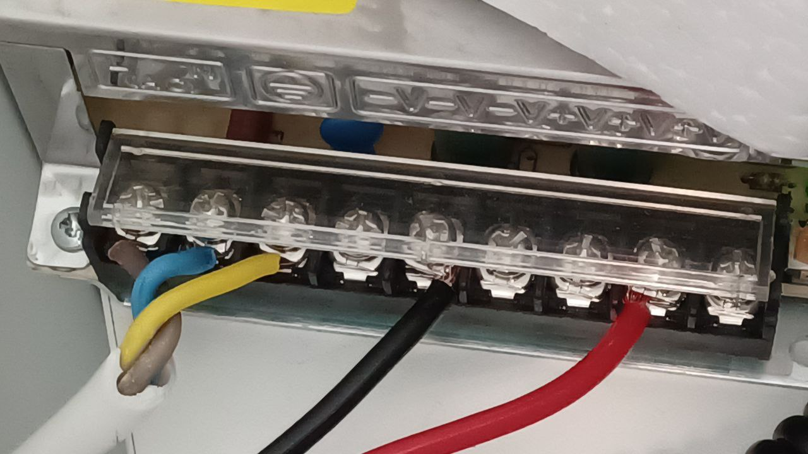

Next: Initial setup to allow Up: sBitx installation guide Previous: Introduction Contents
In order to connect the radio to the power source, a power cable is provided. One side of the cable comes with a XT60 connector (Figure 2.2) and connects to the radio, and the other end is bare ended, and should be connected to the positive (Red) and negative (Black) of a 12V battery system, or power supply. Power consumption is not more than 1.5 A in receive mode, and 9 A in transmit mode.
|
 |